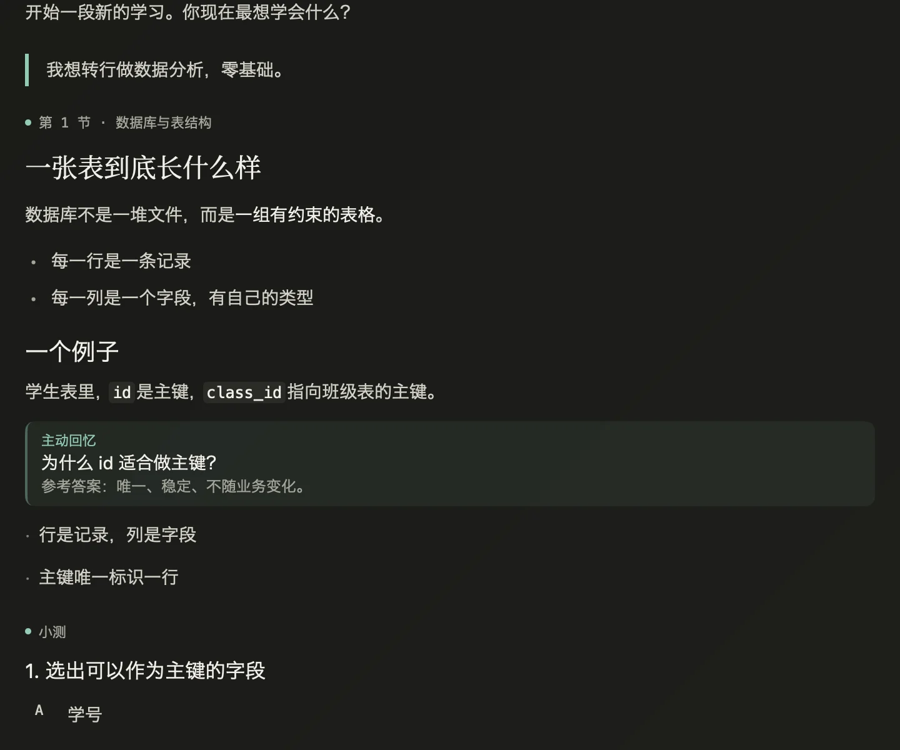
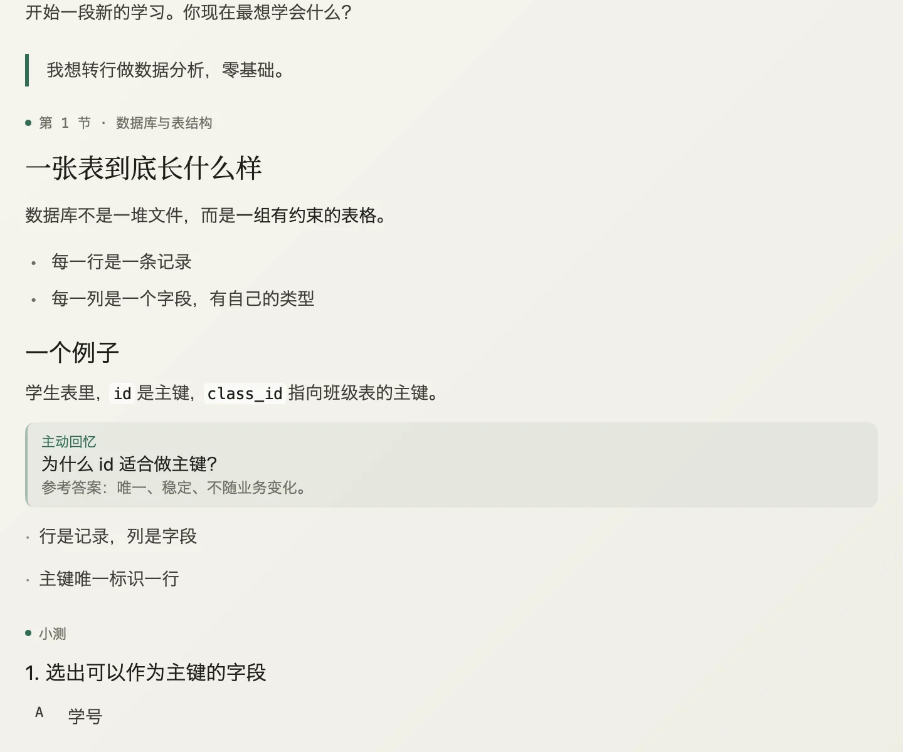
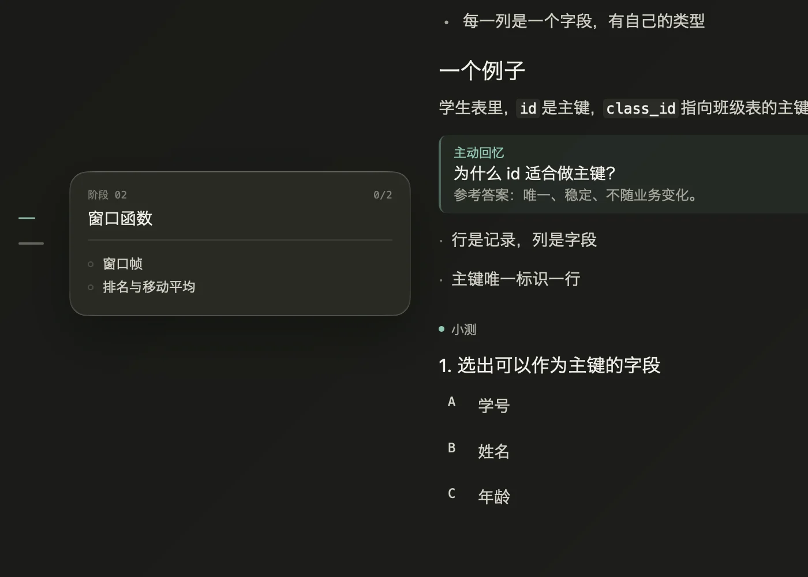
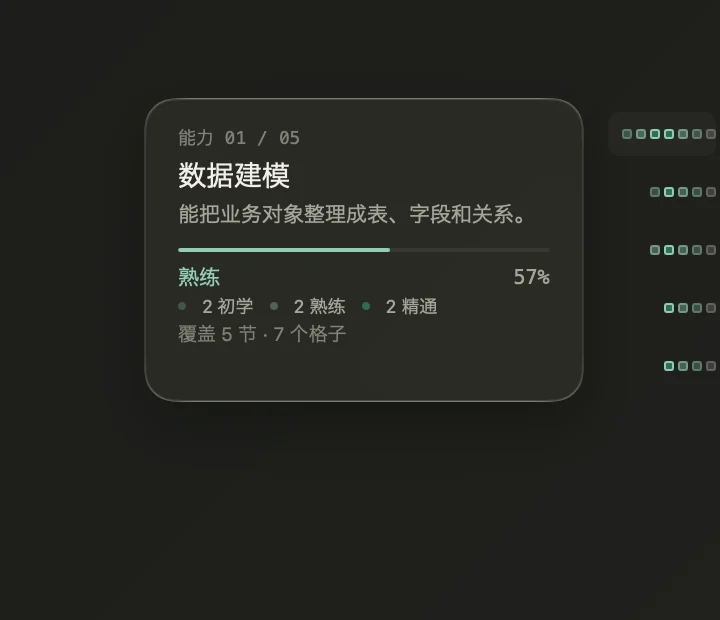
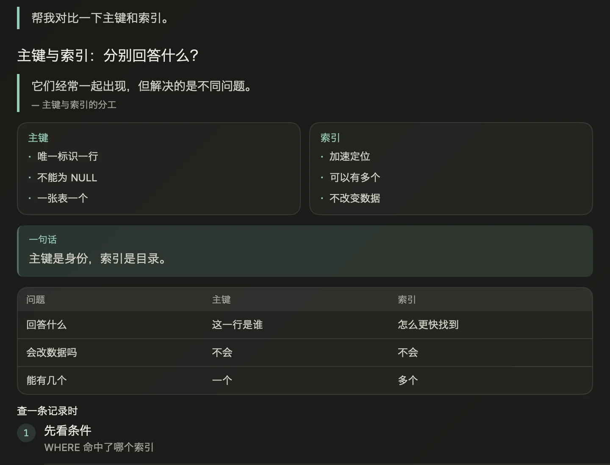

一张桌子，只有正在学的东西
首页不摆放功能。输入框在窗口中央；发送后，它落到窗底，整个窗口留给对话。路线与能力退到两侧边缘，不推动正文。


深浅两种主题，正文都保持同一条阅读宽度。
路线退到左边
阶段和节点被压成一条刻度轨。悬停才展开进度，不打开侧栏，也不改变输入框的位置。它只回答先学什么，不占据正在学的东西。

能力不是节点的副本
每条路线只有 4–6 个跨节点的能力。知识格子向能力提供证据；节点完成，不等于能力掌握。右侧默认只显示热力块，名字、百分比和说明都藏在悬浮卡里。
路线回答学什么。能力回答学会了什么。

聊天里长出画布
需要对比、步骤、表格、代码或记忆卡时，模型会生成原生组件，而不是塞进一段网页。画布仍在对话里，滚动、选中和折叠都由客户端掌握。
